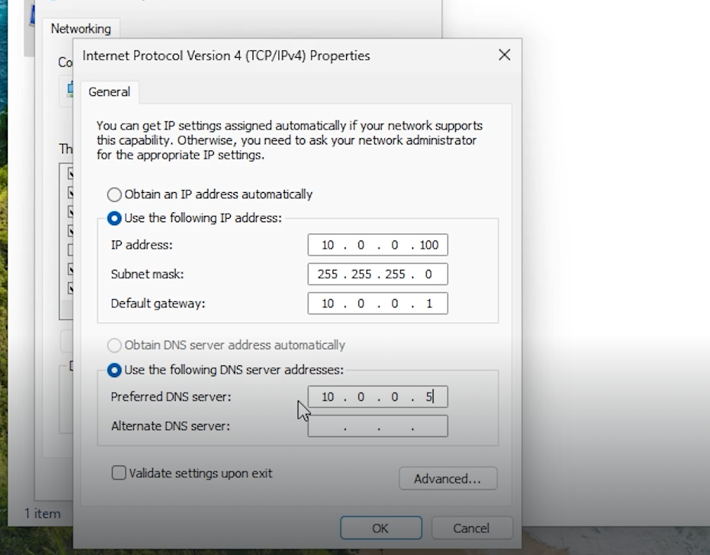
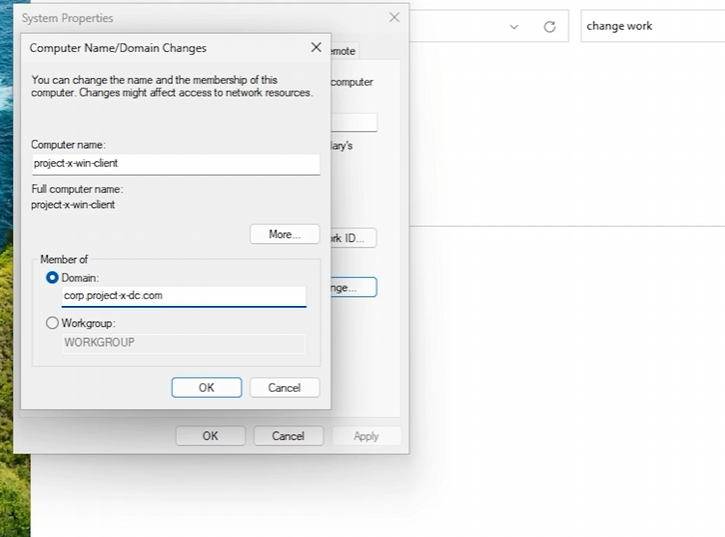
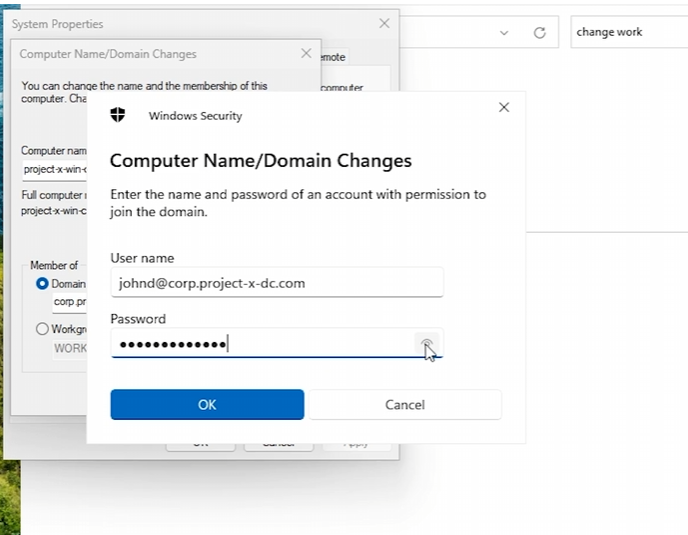
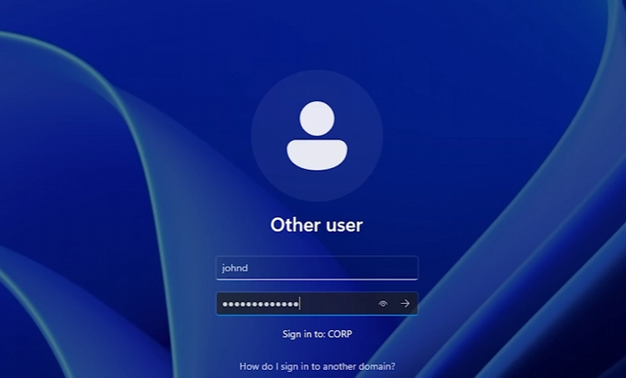
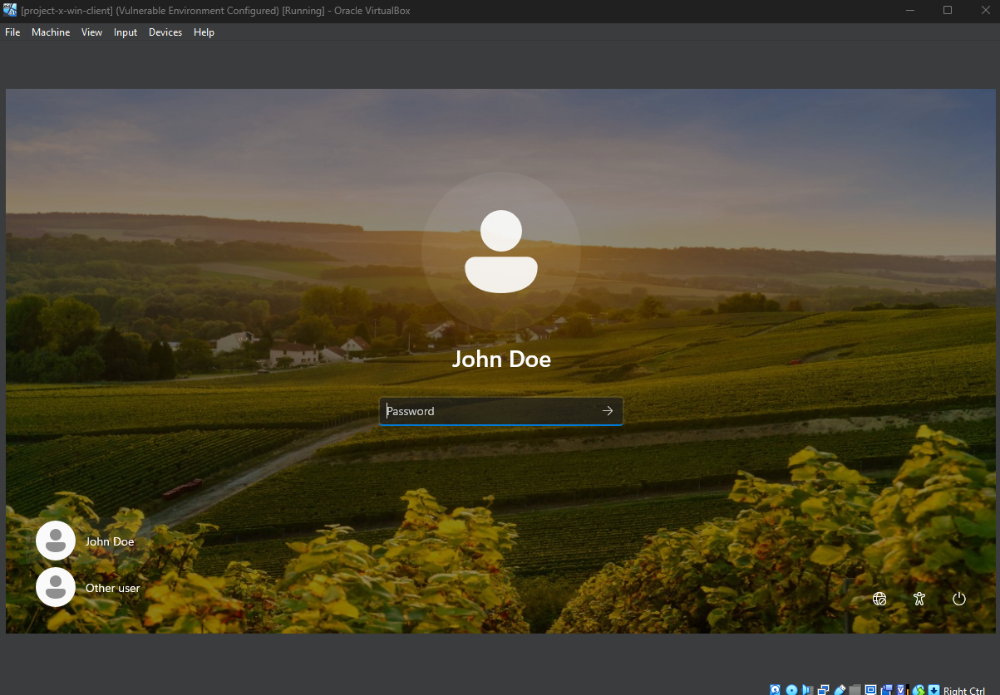

Overview
This machine will simulate a workstation environment. As Project-X continues to grow, new laptops and desktops will be added, also known as workstations. Based on my research, this mirrors real-world enterprise environments where workstations are managed through Active Directory.
After mounting the Windows 11 Enterprise ISO file in VirtualBox and successfully installing Windows 11, I then proceeded to assign a static IP for proper network connectivity.
Static IP Configuration
All of these settings look familiar based on the previously configured Domain Controller.
I set the DNS server to point to the Domain Controller. So when the Windows machine needs to go out and look for a host name, it first runs through the Domain Controller, which then queries or resolves that domain on behalf of this machine.

Joining the Active Directory Domain
I then added the machine to the Active Directory domain.
Renamed the computer name to project-x-win-client for easier management. Then, selected the domain and typed in corp.project-x-dc.com to join this workstation to the AD domain.

Authenticating the User
A Windows Security dialog box appeared, and this is where I authenticated Johnd, the user account I provisioned in the previous project.

Provisioning the User Account
Upon restarting the workstation and logging into Johnd’s account, the user was successfully provisioned.
The presence of CORP under login credentials confirms that this workstation has successfully joined the Domain Controller.

